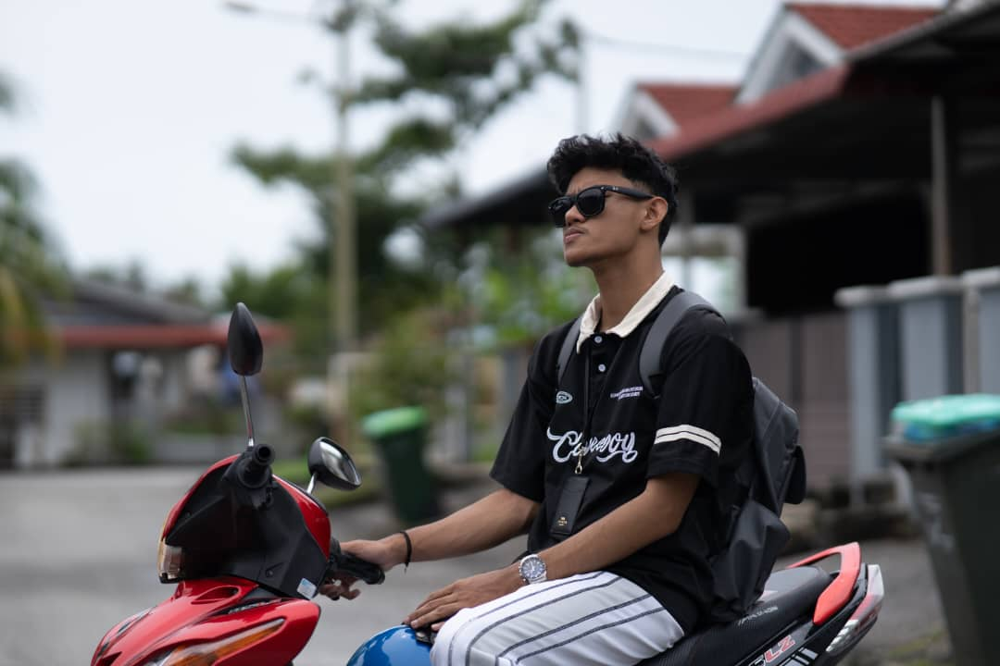

MYSELF

My name is Muhamad Izzat Irfan Bin Mardi, and I am currently 19 years old. I’m proud to say that I am pursuing a Diploma in Information and Library Science at UiTM Kedah, a course that has not only broadened my academic horizons but has also deepened my passion for knowledge and information management. I come from a loving and supportive family of five, with two older brothers who have always been my role models and mentors. Being the youngest in the family has its perks, but it also comes with the responsibility of upholding the family’s values and traditions, which I hold dear.
I was born in the picturesque state of Perak, a place rich in culture, history, and natural beauty. My early childhood, however, was spent in Klang, Selangor a lively and vibrant town known for its diverse communities and thriving atmosphere. It was in Klang that I experienced the bustling energy of city life, surrounded by opportunities to explore and learn.
When I turned 10, my family decided to embark on a new chapter of our lives by moving to Seri Manjung, Perak. This marked a significant turning point for me. Leaving behind the familiarity of Klang was bittersweet, but Seri Manjung quickly won my heart with its peaceful ambiance, close-knit community, and scenic landscapes. Growing up in Seri Manjung allowed me to develop a deeper connection to nature and a profound appreciation for the quieter, simpler joys of life.
Each chapter of my life being born in Perak, experiencing the vibrant life of Klang, and finally settling in Seri Manjung has shaped my identity in meaningful ways. These experiences have taught me resilience, adaptability, and the importance of cherishing every moment, no matter where life takes you.